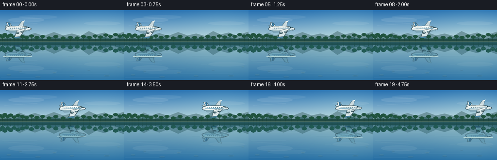
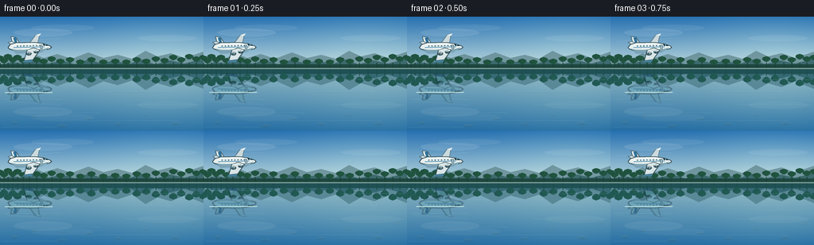

CODING AGENTS AS PIXEL WORLD MODELS
traex/GPT-5.6-Sol · phygen_058
点击播放 · 原生 RGB 像素
逐轮保存的候选
回放视频、检查图与代码变化。
每份候选均可单独播放。实际图片检查记录在下方工具轨迹中。
候选 01播放与检查图
点击播放 · 原生 RGB 像素


展开代码变化
--- 上一保存版本
+++ 本次保存版本
@@ -0,0 +1,207 @@
+from pathlib import Path
+import math
+import numpy as np
+from PIL import Image, ImageDraw, ImageFilter
+import artifact_io
+
+# PixelWorld text-to-video procedural renderer.
+W, H, N = 256, 144, 20
+SS = 4
+w, h = W * SS, H * SS
+WATER_Y = 65
+rng = np.random.default_rng(5801)
+
+
+def gradient(top, bottom, height, width):
+ t = np.linspace(0, 1, height, dtype=np.float32)[:, None, None]
+ a = np.array(top, np.float32)[None, None, :]
+ b = np.array(bottom, np.float32)[None, None, :]
+ return np.repeat(a * (1 - t) + b * t, width, axis=1)
+
+
+def poly(draw, points, fill, outline=None, width=1):
+ p = [(int(x * SS), int(y * SS)) for x, y in points]
+ draw.polygon(p, fill=fill)
+ if outline:
+ draw.line(p + [p[0]], fill=outline, width=width * SS, joint="curve")
+
+
+def ell(draw, box, fill, outline=None, width=1):
+ draw.ellipse(tuple(int(v * SS) for v in box), fill=fill, outline=outline, width=width * SS)
+
+
+def make_background():
+ # Clear blue sky, warm near the distant horizon.
+ sky = gradient((39, 113, 177), (190, 218, 222), WATER_Y * SS + 1, w)
+ yy, xx = np.mgrid[:sky.shape[0], :w]
+ # Large soft atmospheric glow, off camera-right.
+ glow = np.exp(-(((xx - 825) / 330) ** 2 + ((yy - 125) / 190) ** 2))[:, :, None]
+ sky = np.clip(sky + glow * np.array([17, 15, 7]), 0, 255)
+ bg = Image.new("RGB", (w, h))
+ bg.paste(Image.fromarray(sky.astype(np.uint8)), (0, 0))
+ d = ImageDraw.Draw(bg, "RGBA")
+
+ # Fine high cloud streaks; crisp weather emphasizes crystal-clear water.
+ d.ellipse((17*SS, 15*SS, 91*SS, 25*SS), fill=(237, 246, 246, 27))
+ d.ellipse((39*SS, 10*SS, 118*SS, 18*SS), fill=(235, 245, 247, 18))
+ d.ellipse((173*SS, 23*SS, 248*SS, 31*SS), fill=(240, 246, 242, 20))
+ d.line([(9*SS, 31*SS), (77*SS, 27*SS)], fill=(230, 242, 245, 22), width=SS)
+
+ # Layered distant mountain ridges.
+ far = [(0,57),(13,52),(25,54),(40,46),(55,52),(72,47),(90,53),(111,45),
+ (130,52),(148,48),(166,53),(183,43),(198,50),(215,46),(232,52),(256,44),(256,66),(0,66)]
+ poly(d, far, (99, 137, 145, 205))
+ mid = [(0,61),(15,57),(29,59),(46,53),(61,59),(78,55),(94,60),(111,54),
+ (128,59),(144,55),(161,60),(178,54),(195,60),(214,55),(232,59),(256,53),(256,67),(0,67)]
+ poly(d, mid, (54, 100, 103, 225))
+
+ # Natural irregular tree line along both river banks.
+ d.rectangle((0, 60*SS, w, 67*SS), fill=(30, 71, 64, 255))
+ tree_x = [0,5,10,16,22,29,37,46,55,65,76,88,101,115,130,145,159,172,184,196,207,218,228,238,247,256]
+ tree_h = [9,6,11,7,10,6,9,7,5,8,5,7,4,7,4,5,4,7,5,8,6,10,7,11,8,10]
+ for x0, th in zip(tree_x, tree_h):
+ # clustered crowns and narrow trunks
+ d.rectangle((int((x0-0.5)*SS), int((58)*SS), int((x0+0.5)*SS), 66*SS), fill=(25,64,54,220))
+ for j, ox in enumerate((-2.5, 0, 2.3)):
+ r = (2.7 + (j == 1)*1.2)
+ d.ellipse((int((x0+ox-r)*SS), int((60-th-r*.45)*SS),
+ int((x0+ox+r)*SS), int((60-th+r*1.25)*SS)), fill=(31,78 + j*3,62,245))
+ # A thin luminous far shoreline.
+ d.line([(0,65*SS),(w,65*SS)], fill=(176,200,181,155), width=SS)
+
+ # Mirror the entire world above the water, then tint it gently blue.
+ upper = bg.crop((0, 0, w, (WATER_Y+1)*SS))
+ reflected = upper.transpose(Image.Transpose.FLIP_TOP_BOTTOM).resize((w, (H-WATER_Y)*SS), Image.Resampling.BICUBIC)
+ tint = Image.new("RGB", reflected.size, (36, 105, 132))
+ reflected = Image.blend(reflected, tint, 0.29)
+ bg.paste(reflected, (0, WATER_Y*SS))
+
+ wd = ImageDraw.Draw(bg, "RGBA")
+ # Shoreline seam and calm, long horizontal optical ripples.
+ wd.line([(0,65*SS),(w,65*SS)], fill=(216,229,207,120), width=SS)
+ wd.line([(0,66*SS),(w,66*SS)], fill=(17,73,86,80), width=SS)
+ for y0, x0, x1, alpha in [
+ (75,8,65,24),(79,175,250,23),(87,19,104,18),(94,128,218,18),
+ (104,5,77,22),(111,158,253,18),(121,25,126,16),(131,102,224,18),(139,2,71,18)]:
+ wd.line([(x0*SS,y0*SS),(x1*SS,y0*SS)], fill=(188,225,226,alpha), width=SS)
+ wd.line([((x0+12)*SS,(y0+0.8)*SS),((x1-8)*SS,(y0+0.8)*SS)], fill=(18,84,107,alpha//2), width=SS)
+
+ # Barely visible stones below the transparent foreground water.
+ stones = [(18,134,5,2),(42,126,3,1.5),(78,138,6,2),(112,129,4,1.5),
+ (148,136,5,2),(183,124,3,1.2),(220,135,6,2),(244,117,3,1)]
+ for sx, sy, rx, ry in stones:
+ wd.ellipse(((sx-rx)*SS,(sy-ry)*SS,(sx+rx)*SS,(sy+ry)*SS), fill=(57,96,100,35))
+ wd.arc(((sx-rx)*SS,(sy-ry)*SS,(sx+rx)*SS,(sy+ry)*SS), 190, 345, fill=(190,220,211,25), width=SS)
+ return bg
+
+
+def transform(points, cx, cy, scale=1.0, angle=0.0):
+ ca, sa = math.cos(angle), math.sin(angle)
+ return [(cx + scale*(x*ca-y*sa), cy + scale*(x*sa+y*ca)) for x,y in points]
+
+
+def draw_aircraft_layer(cx, cy, bank=0.0):
+ """Detailed side/three-quarter view of a modern gliding passenger jet."""
+ im = Image.new("RGBA", (w, h), (0,0,0,0))
+ d = ImageDraw.Draw(im, "RGBA")
+ ang = math.radians(-1.6 + bank)
+ T = lambda pts: transform(pts, cx, cy, 1.0, ang)
+
+ # Soft ambient underside shadow, not a cast shadow (aircraft is airborne).
+ poly(d, T([(-23,1),(-13,5),(12,5),(25,1),(15,7),(-17,8)]), (23,51,65,45))
+
+ # Far wing behind fuselage.
+ poly(d, T([(-2,-2),(8,-15),(13,-15),(10,-2)]), (203,218,222,255), (91,119,128,190), 1)
+ poly(d, T([(8,-15),(15,-17),(13,-14)]), (237,244,241,255))
+
+ # Vertical and horizontal tail assembly.
+ poly(d, T([(-20,-2),(-23,-14),(-17,-13),(-10,-2)]), (231,238,237,255), (67,93,102,220), 1)
+ poly(d, T([(-20,-12),(-17,-13),(-14,-3),(-17,-3)]), (45,113,154,255))
+ poly(d, T([(-19,-1),(-27,-7),(-22,-8),(-10,-2)]), (213,225,227,255), (76,103,110,190), 1)
+
+ # Main fuselage with swept nose. Outline is important at thumbnail scale.
+ body = [(-24,-4),(-17,-6),(7,-6),(18,-4),(26,-1),(28,1),(25,3),(15,5),(-17,5),(-25,2),(-27,0)]
+ poly(d, T(body), (231,239,238,255), (48,74,83,255), 1)
+ # Sunlit upper crown and cool belly.
+ poly(d, T([(-22,-3),(-16,-5),(7,-5),(18,-3),(25,-1),(9,-2),(-19,-1)]), (251,253,247,225))
+ poly(d, T([(-25,1),(-16,3),(16,3),(25,1),(21,4),(14,6),(-18,5)]), (122,157,166,170))
+ # Thin airline stripe.
+ p = T([(-20,-0.1),(19,-0.1)])
+ d.line([(int(x*SS),int(y*SS)) for x,y in p], fill=(40,119,160,210), width=SS)
+
+ # Cockpit glazing.
+ poly(d, T([(17,-3.6),(22,-2.4),(24,-1.1),(18,-1.3)]), (28,58,70,255))
+ p = T([(20,-3),(20,-1.3)])
+ d.line([(int(x*SS),int(y*SS)) for x,y in p], fill=(154,200,207,210), width=SS)
+
+ # Passenger windows following the fuselage centerline.
+ for wx in range(-15, 16, 4):
+ x,y = transform([(wx,-1.8)],cx,cy,1.0,ang)[0]
+ ell(d, (x-0.85,y-0.65,x+0.85,y+0.65), (30,70,84,245))
+ ell(d, (x-0.48,y-0.43,x+0.48,y+0.15), (118,178,191,190))
+ # One forward door.
+ door = T([(14,-2.3),(16,-2.3),(16,2.5),(14,2.5)])
+ d.line([(int(x*SS),int(y*SS)) for x,y in door+[door[0]]], fill=(83,111,117,190), width=SS)
+
+ # Dominant near wing swept toward viewer.
+ poly(d, T([(5,1),(13,4),(4,16),(-7,17),(-3,4)]), (216,229,231,255), (55,83,91,240), 1)
+ poly(d, T([(-7,17),(4,16),(2,19),(-10,19)]), (68,129,158,255))
+ # Wing sunlight edge.
+ p = T([(-2,4),(5,2),(11,4)])
+ d.line([(int(x*SS),int(y*SS)) for x,y in p], fill=(252,255,250,225), width=SS)
+
+ # Twin engines tucked beneath wing, with dark intakes and silver highlights.
+ for ex,ey,sc in [(-1,8,1.0),(8,6,0.85)]:
+ x,y = transform([(ex,ey)],cx,cy,1.0,ang)[0]
+ ell(d,(x-3.4*sc,y-1.9*sc,x+3.5*sc,y+2.3*sc),(105,139,148,255),(42,67,75,255),1)
+ ell(d,(x-3.25*sc,y-1.6*sc,x-0.5*sc,y+1.75*sc),(24,49,58,255))
+ ell(d,(x-2.7*sc,y-1.1*sc,x-1.1*sc,y+1.05*sc),(91,137,146,255))
+ p=T([(ex-2.2,ey-1.35),(ex+2.0,ey-1.2)])
+ d.line([(int(a*SS),int(b*SS)) for a,b in p],fill=(235,245,241,210),width=SS)
+ return im
+
+
+BACKGROUND = make_background()
+frames=[]
+for i in range(N):
+ t = i/(N-1)
+ # Smooth, level glide across the open river. Ease only slightly at endpoints.
+ q = t*t*(3-2*t)
+ cx = 37 + 181*q
+ cy = 38.5 - 1.5*t + 0.45*math.sin(t*math.pi*1.2)
+ aircraft = draw_aircraft_layer(cx,cy,bank=0.35*math.sin(t*math.pi*2))
+
+ frame = BACKGROUND.copy().convert("RGBA")
+ # A physically aligned, vertically mirrored plane reflection on the water.
+ reflection = aircraft.transpose(Image.Transpose.FLIP_TOP_BOTTOM)
+ # Flip about y=WATER_Y rather than about the center of the frame.
+ # PIL's full-frame flip maps y to H-y; translation corrects it to 2*waterline-y.
+ dy = int((2*WATER_Y-H)*SS)
+ shifted = Image.new("RGBA",(w,h),(0,0,0,0))
+ shifted.alpha_composite(reflection,(0,dy))
+ arr=np.array(shifted)
+ # Cool tint and reduced contrast while retaining the unmistakable silhouette.
+ arr[...,0]=(arr[...,0].astype(np.float32)*0.48).astype(np.uint8)
+ arr[...,1]=(arr[...,1].astype(np.float32)*0.70).astype(np.uint8)
+ arr[...,2]=(arr[...,2].astype(np.float32)*0.78).astype(np.uint8)
+ arr[...,3]=(arr[...,3].astype(np.float32)*0.61).astype(np.uint8)
+ shifted=Image.fromarray(arr,"RGBA").filter(ImageFilter.GaussianBlur(0.42*SS))
+ # Strictly confine reflections to water.
+ mask=Image.new("L",(w,h),0); ImageDraw.Draw(mask).rectangle((0,WATER_Y*SS,w,h),fill=255)
+ shifted.putalpha(Image.composite(shifted.getchannel("A"),Image.new("L",(w,h),0),mask))
+ frame.alpha_composite(shifted)
+
+ # Subtle narrow ripple crosses the reflected aircraft, preserving a still-water feel.
+ fd=ImageDraw.Draw(frame,"RGBA")
+ ry=(2*WATER_Y-cy+4)*SS
+ fd.line([(max(0,(cx-31)*SS),ry),(min(w,(cx+29)*SS),ry)],fill=(196,225,221,34),width=SS)
+
+ frame.alpha_composite(aircraft)
+ # Downsample gives clean cinematic antialiasing.
+ out=frame.convert("RGB").resize((W,H),Image.Resampling.LANCZOS)
+ a=np.asarray(out,dtype=np.uint8)
+ frames.append(a)
+
+frames=np.stack(frames,axis=0)
+assert frames.shape==(N,H,W,3) and frames.dtype==np.uint8
+artifact_io.save(frames,Path(__file__).resolve().parent)
可观测工具轨迹
实际执行的命令与返回图片。
命令 1exit 0
/bin/bash -lc "cat prompt.txt && printf '\\n---RULES---\\n' && cat GENERATION_RULES.md && printf '\\n---SPEC---\\n' && cat task_spec.json"
命令 2exit 0
/bin/bash -lc "find . -maxdepth 2 -type f -printf '%p\\n' | sort"
命令 3exit 0
/bin/bash -lc 'cat artifact_io.py'
命令 4exit 0
/bin/bash -lc "cat > generate.py <<'PY'
from pathlib import Path
import math
import numpy as np
from PIL import Image, ImageDraw, ImageFilter
import artifact_io
# PixelWorld text-to-video procedural renderer.
W, H, N = 256, 144, 20
SS = 4
w, h = W * SS, H * SS
WATER_Y = 65
rng = np.random.default_rng(5801)
def gradient(top, bottom, height, width):
t = np.linspace(0, 1, height, dtype=np.float32)[:, None, None]
a = np.array(top, np.float32)[None, None, :]
b = np.array(bottom, np.float32)[None, None, :]
return np.repeat(a * (1 - t) + b * t, width, axis=1)
def poly(draw, points, fill, outline=None, width=1):
p = [(int(x * SS), int(y * SS)) for x, y in points]
draw.polygon(p, fill=fill)
if outline:
draw.line(p + [p[0]], fill=outline, width=width * SS, joint=\"curve\")
def ell(draw, box, fill, outline=None, width=1):
draw.ellipse(tuple(int(v * SS) for v in box), fill=fill, outline=outline, width=width * SS)
def make_background():
# Clear blue sky, warm near the distant horizon.
sky = gradient((39, 113, 177), (190, 218, 222), WATER_Y * SS + 1, w)
yy, xx = np.mgrid[:sky.shape[0], :w]
# Large soft atmospheric glow, off camera-right.
glow = np.exp(-(((xx - 825) / 330) ** 2 + ((yy - 125) / 190) ** 2))[:, :, None]
sky = np.clip(sky + glow * np.array([17, 15, 7]), 0, 255)
bg = Image.new(\"RGB\", (w, h))
bg.paste(Image.fromarray(sky.astype(np.uint8)), (0, 0))
d = ImageDraw.Draw(bg, \"RGBA\")
# Fine high cloud streaks; crisp weather emphasizes crystal-clear water.
d.ellipse((17*SS, 15*SS, 91*SS, 25*SS), fill=(237, 246, 246, 27))
d.ellipse((39*SS, 10*SS, 118*SS, 18*SS), fill=(235, 245, 247, 18))
d.ellipse((173*SS, 23*SS, 248*SS, 31*SS), fill=(240, 246, 242, 20))
d.line([(9*SS, 31*SS), (77*SS, 27*SS)], fill=(230, 242, 245, 22), width=SS)
# Layered distant mountain ridges.
far = [(0,57),(13,52),(25,54),(40,46),(55,52),(72,47),(90,53),(111,45),
(130,52),(148,48),(166,53),(183,43),(198,50),(215,46),(232,52),(256,44),(256,66),(0,66)]
poly(d, far, (99, 137, 145, 205))
mid = [(0,61),(15,57),(29,59),(46,53),(61,59),(78,55),(94,60),(111,54),
(128,59),(144,55),(161,60),(178,54),(195,60),(214,55),(232,59),(256,53),(256,67),(0,67)]
poly(d, mid, (54, 100, 103, 225))
# Natural irregular tree line along both river banks.
d.rectangle((0, 60*SS, w, 67*SS), fill=(30, 71, 64, 255))
tree_x = [0,5,10,16,22,29,37,46,55,65,76,88,101,115,130,145,159,172,184,196,207,218,228,238,247,256]
tree_h = [9,6,11,7,10,6,9,7,5,8,5,7,4,7,4,5,4,7,5,8,6,10,7,11,8,10]
for x0, th in zip(tree_x, tree_h):
# clustered crowns and narrow trunks
d.rectangle((int((x0-0.5)*SS), int((58)*SS), int((x0+0.5)*SS), 66*SS), fill=(25,64,54,220))
for j, ox in enumerate((-2.5, 0, 2.3)):
r = (2.7 + (j == 1)*1.2)
d.ellipse((int((x0+ox-r)*SS), int((60-th-r*.45)*SS),
int((x0+ox+r)*SS), int((60-th+r*1.25)*SS)), fill=(31,78 + j*3,62,245))
# A thin luminous far shoreline.
d.line([(0,65*SS),(w,65*SS)], fill=(176,200,181,155), width=SS)
# Mirror the entire world above the water, then tint it gently blue.
upper = bg.crop((0, 0, w, (WATER_Y+1)*SS))
reflected = upper.transpose(Image.Transpose.FLIP_TOP_BOTTOM).resize((w, (H-WATER_Y)*SS), Image.Resampling.BICUBIC)
tint = Image.new(\"RGB\", reflected.size, (36, 105, 132))
reflected = Image.blend(reflected, tint, 0.29)
bg.paste(reflected, (0, WATER_Y*SS))
wd = ImageDraw.Draw(bg, \"RGBA\")
# Shoreline seam and calm, long horizontal optical ripples.
wd.line([(0,65*SS),(w,65*SS)], fill=(216,229,207,120), width=SS)
wd.line([(0,66*SS),(w,66*SS)], fill=(17,73,86,80), width=SS)
for y0, x0, x1, alpha in [
(75,8,65,24),(79,175,250,23),(87,19,104,18),(94,128,218,18),
(104,5,77,22),(111,158,253,18),(121,25,126,16),(131,102,224,18),(139,2,71,18)]:
wd.line([(x0*SS,y0*SS),(x1*SS,y0*SS)], fill=(188,225,226,alpha), width=SS)
wd.line([((x0+12)*SS,(y0+0.8)*SS),((x1-8)*SS,(y0+0.8)*SS)], fill=(18,84,107,alpha//2), width=SS)
# Barely visible stones below the transparent foreground water.
stones = [(18,134,5,2),(42,126,3,1.5),(78,138,6,2),(112,129,4,1.5),
(148,136,5,2),(183,124,3,1.2),(220,135,6,2),(244,117,3,1)]
for sx, sy, rx, ry in stones:
wd.ellipse(((sx-rx)*SS,(sy-ry)*SS,(sx+rx)*SS,(sy+ry)*SS), fill=(57,96,100,35))
wd.arc(((sx-rx)*SS,(sy-ry)*SS,(sx+rx)*SS,(sy+ry)*SS), 190, 345, fill=(190,220,211,25), width=SS)
return bg
def transform(points, cx, cy, scale=1.0, angle=0.0):
ca, sa = math.cos(angle), math.sin(angle)
return [(cx + scale*(x*ca-y*sa), cy + scale*(x*sa+y*ca)) for x,y in points]
def draw_aircraft_layer(cx, cy, bank=0.0):
\"\"\"Detailed side/three-quarter view of a modern gliding passenger jet.\"\"\"
im = Image.new(\"RGBA\", (w, h), (0,0,0,0))
d = ImageDraw.Draw(im, \"RGBA\")
ang = math.radians(-1.6 + bank)
T = lambda pts: transform(pts, cx, cy, 1.0, ang)
# Soft ambient underside shadow, not a cast shadow (aircraft is airborne).
poly(d, T([(-23,1),(-13,5),(12,5),(25,1),(15,7),(-17,8)]), (23,51,65,45))
# Far wing behind fuselage.
poly(d, T([(-2,-2),(8,-15),(13,-15),(10,-2)]), (203,218,222,255), (91,119,128,190), 1)
poly(d, T([(8,-15),(15,-17),(13,-14)]), (237,244,241,255))
# Vertical and horizontal tail assembly.
poly(d, T([(-20,-2),(-23,-14),(-17,-13),(-10,-2)]), (231,238,237,255), (67,93,102,220), 1)
poly(d, T([(-20,-12),(-17,-13),(-14,-3),(-17,-3)]), (45,113,154,255))
poly(d, T([(-19,-1),(-27,-7),(-22,-8),(-10,-2)]), (213,225,227,255), (76,103,110,190), 1)
# Main fuselage with swept nose. Outline is important at thumbnail scale.
body = [(-24,-4),(-17,-6),(7,-6),(18,-4),(26,-1),(28,1),(25,3),(15,5),(-17,5),(-25,2),(-27,0)]
poly(d, T(body), (231,239,238,255), (48,74,83,255), 1)
# Sunlit upper crown and cool belly.
poly(d, T([(-22,-3),(-16,-5),(7,-5),(18,-3),(25,-1),(9,-2),(-19,-1)]), (251,253,247,225))
poly(d, T([(-25,1),(-16,3),(16,3),(25,1),(21,4),(14,6),(-18,5)]), (122,157,166,170))
# Thin airline stripe.
p = T([(-20,-0.1),(19,-0.1)])
d.line([(int(x*SS),int(y*SS)) for x,y in p], fill=(40,119,160,210), width=SS)
# Cockpit glazing.
poly(d, T([(17,-3.6),(22,-2.4),(24,-1.1),(18,-1.3)]), (28,58,70,255))
p = T([(20,-3),(20,-1.3)])
d.line([(int(x*SS),int(y*SS)) for x,y in p], fill=(154,200,207,210), width=SS)
# Passenger windows following the fuselage centerline.
for wx in range(-15, 16, 4):
x,y = transform([(wx,-1.8)],cx,cy,1.0,ang)[0]
ell(d, (x-0.85,y-0.65,x+0.85,y+0.65), (30,70,84,245))
ell(d, (x-0.48,y-0.43,x+0.48,y+0.15), (118,178,191,190))
# One forward door.
door = T([(14,-2.3),(16,-2.3),(16,2.5),(14,2.5)])
d.line([(int(x*SS),int(y*SS)) for x,y in door+[door[0]]], fill=(83,111,117,190), width=SS)
# Dominant near wing swept toward viewer.
poly(d, T([(5,1),(13,4),(4,16),(-7,17),(-3,4)]), (216,229,231,255), (55,83,91,240), 1)
poly(d, T([(-7,17),(4,16),(2,19),(-10,19)]), (68,129,158,255))
# Wing sunlight edge.
p = T([(-2,4),(5,2),(11,4)])
d.line([(int(x*SS),int(y*SS)) for x,y in p], fill=(252,255,250,225), width=SS)
# Twin engines tucked beneath wing, with dark intakes and silver highlights.
for ex,ey,sc in [(-1,8,1.0),(8,6,0.85)]:
x,y = transform([(ex,ey)],cx,cy,1.0,ang)[0]
ell(d,(x-3.4*sc,y-1.9*sc,x+3.5*sc,y+2.3*sc),(105,139,148,255),(42,67,75,255),1)
ell(d,(x-3.25*sc,y-1.6*sc,x-0.5*sc,y+1.75*sc),(24,49,58,255))
ell(d,(x-2.7*sc,y-1.1*sc,x-1.1*sc,y+1.05*sc),(91,137,146,255))
p=T([(ex-2.2,ey-1.35),(ex+2.0,ey-1.2)])
d.line([(int(a*SS),int(b*SS)) for a,b in p],fill=(235,245,241,210),width=SS)
return im
BACKGROUND = make_background()
frames=[]
for i in range(N):
t = i/(N-1)
# Smooth, level glide across the open river. Ease only slightly at endpoints.
q = t*t*(3-2*t)
cx = 37 + 181*q
cy = 38.5 - 1.5*t + 0.45*math.sin(t*math.pi*1.2)
aircraft = draw_aircraft_layer(cx,cy,bank=0.35*math.sin(t*math.pi*2))
frame = BACKGROUND.copy().convert(\"RGBA\")
# A physically aligned, vertically mirrored plane reflection on the water.
reflection = aircraft.transpose(Image.Transpose.FLIP_TOP_BOTTOM)
# Flip about y=WATER_Y rather than about the center of the frame.
# PIL's full-frame flip maps y to H-y; translation corrects it to 2*waterline-y.
dy = int((2*WATER_Y-H)*SS)
shifted = Image.new(\"RGBA\",(w,h),(0,0,0,0))
shifted.alpha_composite(reflection,(0,dy))
arr=np.array(shifted)
# Cool tint and reduced contrast while retaining the unmistakable silhouette.
arr[...,0]=(arr[...,0].astype(np.float32)*0.48).astype(np.uint8)
arr[...,1]=(arr[...,1].astype(np.float32)*0.70).astype(np.uint8)
arr[...,2]=(arr[...,2].astype(np.float32)*0.78).astype(np.uint8)
arr[...,3]=(arr[...,3].astype(np.float32)*0.61).astype(np.uint8)
shifted=Image.fromarray(arr,\"RGBA\").filter(ImageFilter.GaussianBlur(0.42*SS))
# Strictly confine reflections to water.
mask=Image.new(\"L\",(w,h),0); ImageDraw.Draw(mask).rectangle((0,WATER_Y*SS,w,h),fill=255)
shifted.putalpha(Image.composite(shifted.getchannel(\"A\"),Image.new(\"L\",(w,h),0),mask))
frame.alpha_composite(shifted)
# Subtle narrow ripple crosses the reflected aircraft, preserving a still-water feel.
fd=ImageDraw.Draw(frame,\"RGBA\")
ry=(2*WATER_Y-cy+4)*SS
fd.line([(max(0,(cx-31)*SS),ry),(min(w,(cx+29)*SS),ry)],fill=(196,225,221,34),width=SS)
frame.alpha_composite(aircraft)
# Downsample gives clean cinematic antialiasing.
out=frame.convert(\"RGB\").resize((W,H),Image.Resampling.LANCZOS)
a=np.asarray(out,dtype=np.uint8)
frames.append(a)
frames=np.stack(frames,axis=0)
assert frames.shape==(N,H,W,3) and frames.dtype==np.uint8
artifact_io.save(frames,Path(__file__).resolve().parent)
PY
python generate.py
python - <<'PY'
import numpy as np
from PIL import Image
z=np.load('pixels.npz')['pixels']
print('pixels',z.shape,z.dtype,'frames',len(list(__import__('pathlib').Path('frames').glob('*.png'))))
for i in [0,5,10,15,19]:
a=np.array(Image.open(f'frames/{i:02d}.png'))
print(i,a.mean((0,1)).round(1),a.min(),a.max())
PY"命令 5exit 0
/bin/bash -lc "python - <<'PY'
# Validate exact required tensor and temporal motion.
from pathlib import Path
import numpy as np
from PIL import Image
fs=np.stack([np.asarray(Image.open(f'frames/{i:02d}.png').convert('RGB')) for i in range(20)])
print(fs.shape, fs.dtype)
print('mean changed pixels/frame:', int(np.mean([np.any(fs[i]"'!=fs[i-1],axis=2).sum() for i in range(1,20)])))
print('"'all RGB:', all(Image.open(f'frames/{i:02d}.png').mode=='RGB' for i in range(20)))
print('artifacts:', [(p,Path(p).stat().st_size) for p in ['pixels.npz','inspection.png','transition_check.png','index.html']])
PY
# Reproducibility and source sanity
python -m py_compile generate.py
"保存候选 1 份；完成命令 5 次；可验证图片返回 0 张。原始 API 响应与完整日志保留在本地。